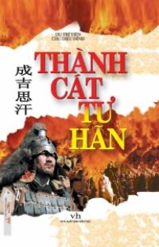

Thành Cát Tư Hãn là một nhân vật lịch sử nổi tiếng từ xưa tới nay trên toàn thế giới; là một vĩ nhân được thế giới công nhận hằng nghìn năm qua. Ông chẳng những thống nhất cả vùng thảo nguyên Mông Cổ, xây dựng dân tộc Mông Cổ, mà còn có công đóng góp một cách kiệt xuất trong việc thống nhất và phát triển dân tộc trung hoa, đồng thời, còn có ảnh hưởng rất to lớn đối với nhiều quốc gia và dân tộc ở âu Châu cũng như ở á Châu. Đối với việc giao lưu văn hóa giữa đông và tây cũng như đối với việc thay đổi và cải cách chính trị, thúc đẩy sự phát triển lịch sử trên thế giới có một tác dụng mà từ trước tới nay chưa bao giờ có.
Thành Cát Tư Hãn chẳng những là một vị anh hùng của dân tộc Mông Cổ mà cũng là của dân tộc Trung Hoa, mà còn là một trong những nhà quân sự, chính trị, tư tưởng vĩ đại nhất trong lịch sự thế giới. Thông qua những hình thức như lịch sử tiểu thuyết, truyện ký nhân vật hoặc điện ảnh, truyền hình và hí kịch để phản ánh cuộc đời của Thành Cát Tư Hãn là một sự mong đợi tha thiết của đọc giả, khán giả trong và ngoài nước.
Tôi nguyên là một người làm công tác sử học, ngay từ lúc còn học bậc đại học tôi đã hết sức sùng bái Thành Cát Tư Hãn. Sau cách mạng văn hóa tôi trở về trường Đại Học Bắc Kinh để học chuyên sâu ngành "Lịch sử về các triều đại Liêu, Kim, Nguyên" của nhà sử học nổi tiếng Thái Mỹ Bưu, cho nên đối với Thành Cát Tư Hãn tôi lại càng cảm thấy hứng thú. Bắt đầu từ đó tôi nghiên cứu sâu về Thành Cát Tư Hãn. Đến đầu năm 1991, trong vòng 12 năm tôi đã lần lượt sáng tác những tác phẩm như Truyện Thành Cát Tư Hãn (viết theo thể văn kể chuyện nhân vật lịch sử hiện còn bản in của nhà xuất bản đại học sư phạm Liên Ninh) ; Thành Cát Tư Hãn Toàn truyện (viết theo thể văn chuyên khảo, do nhà xuất bản Bắc Kinh xuất bản) và kịch bản văn học truyền hình nhiều tập có nhan đề "Con Cưng Của Trời". Về sau, tôi được đạo diễn nổi tiếng là ông Trần Gia Lâm giới thiệu, quen được với thầy Du Trí Tiên, một nhà biên kịch nổi tiếng. Thầy đã bỏ ra suốt mấy tháng để viết bản thảo thứ hai cho kịch bản truyền hình nhiều tập "Thành Cát Tư Hãn". Sáu tháng đầu năm 1997, tôi và thầy Du Trí Tiên được tập đoàn Sĩ Kỳ của Nội Mông Cổ ủy thác sửa chữa nhiều lần bản thảo nói trên, cuối cùng đã hoàn thành kịch bản truyền hình nhiều tập "Thành Cát Tư Hãn". Sáu tháng đầu năm năm nay, kịch bản này được Vương Văn Kiệt đạo diễn đã quay xong toàn bộ. Trong một ngày gần đây nó sẽ được đưa ra chiếu rộng rãi trên khắp toàn quốc cũng như ở nước ngoài.
Nhằm đáp ứng nhu cầu của đông đảo khán giả và đọc giả, chúng tôi tham khảo tất cả những tác phẩm nói trên, như Thành Cát Tư Hãn Toàn truyện, truyện Thành Cát Tư Hãn, kịch bản văn học truyền hình Con Cưng Của Trời và quyển Thành Cát Tư Hãn, v. v... viết lại thành một bộ tiểu thuyết lịch sử dài, lấy nhan đề Thành Cát Tư Hãn. Mọi người thường nói phải: "Mày mò 10 năm mới cho ra được một vở kịch". Năm 1988, khi tôi bắt đầu viết kịch bản văn học Con Cưng Của Trời cho tới nay đã 12 năm trôi qua. Nếu tính từ năm 1980 là năm tôi bắt đầu viết truyện ký nhân vật lịch sử Thành Cát Tư Hãn Truyện, thì đến nay đã hơn 20 năm. Trong quá trình 20 năm sáng tác, tôi đã cảm nhận được một cách sâu sắc rằng, đem truyện nhân vật lịch sử cải biên thành kịch bản truyền hình nhiều tập, rồi lại cải biên thành tiểu thuyết lịch sử dài, đó là một sự thử nghiệm rất có ý nghĩa, vì nó đã kết hợp lại làm một sự nghiên cứu về sử học với văn nghệ giải trí, cũng như lợi ích kinh tế xã hội, mở một con đường mới mẻ cho ngành sử học, đồng thời, cũng là một sự mò mẫm có ích đối với việc nâng cao chất lượng của phim truyền hình lịch sử nhiều tập. Có nhiều bạn xem hiện tượng đó là "Sử học truyền hình” hoặc "Văn học của sử học ". Tôi cho rằng, dùng hình thức kịch lịch sử hoặc tiểu thuyết lịch sử để tuyên truyền chính xác một nhân vật lịch sử, phải trở thành một trong những nhiệm vụ của các nhà sử học.
Các nhà sử học của chúng ta không nên hoàn toàn đùn nhiệm vụ cho những nhà viết kịch bản truyền hình, hoặc cho những nhà viết tiểu thuyết; ngược lại, những nhà viết kịch bản truyền hình cũng như những nhà viết tiểu thuyết không nên chặn các nhà sử học ở ngoài cửa, mà cả hai nên chủ động kết hợp với nhau. Vì làm như vậy, chẳng những có thể tiến lên một bước nâng cao tính khoa học và tính đáng tin trong những vở kịch lịch sử, cũng như trong những quyển tiểu thuyết lịch sử, đồng thời, có thể thúc đẩy việc nghiên cứu lịch sử tiến sâu thêm một bước.
Tất nhiên, muốn thực sự làm được điều này cũng không phải là dễ dàng, vì nó chẳng những đòi hỏi ở các nhà sử học phải có một sự phối hợp ngầm với các nhà sáng tác kịch bản truyền hình, cũng như các nhà viết tiểu thuyết, nhất là cần phải xử lý tốt mối quan hệ giữa sự chân thực trong lịch sử và sự chân thực trong văn học. Khi được xem là một sáng tác chuyên đề về học thuật như quyển Thành Cát Tư Hãn Toàn Truyện, đòi hỏi phải hết sức nghiêm túc, cẩn thận; đòi hỏi phải bất cứ sự việc gì cũng phải có xuất xứ, bất cứ sự việc gì cũng phải có lai lịch. Do vậy, tôi đã bỏ ra thời gian 12 năm để tham khảo một số lượng lớn những tài liệu ban đầu ở trong nước cũng như ở ngoại quốc, hấp thu thành quả nghiên cứu của các bậc tiền nhân, sửa chữa đi sửa chữa lại bản thảo nhiều lần, để có thể giới thiệu toàn diện cuộc đời của Thành Cát Tư Hãn. Những nhà xuất bản cũng như trong giới học thuật đều cho rằng, quyển sách này là quyển truyện ký lớn về Thành Cát Tư Hãn đầu tiên ở Trung Quốc, đứng đầu tất cả những quyển sách giới thiệu về nhân vật "Con Cưng Của Trời " này. Hơn nữa, nó cũng bổ sung những khoảng trống trong việc nghiên cứu lịch sử của triều đình nhà Nguyên, nâng cao việc nghiên cứu về Thành Cát Tư Hãn lên một trình độ mới. Quyển sách này không phải dựa vào sự ước đoán chủ quan để suy luận, mà là dựa vào những tài liệu lịch sử đáng tin cậy để tiến hành sáng tác, cố gắng phản ánh cho được sự chân thật về mặt lịch sử.
Nhưng, đối với các tác giả kịch bản truyền hình cũng như tiểu thuyết lịch sử, thì không phải hoàn toàn giới hạn trong phạm vi lịch sử, mà còn phải có sự gia công cần thiết về mặt văn học. Nhưng tôi cho rằng, những phim truyền hình về lịch sử cũng như tiểu thuyết lịch sử là phải khác nhau với hí kịch hoặc tiểu thuyết nói chung, mà sự gia công đó không nên tùy tiện theo ý muốn chủ quan, không nên chỉ "hư cấu thuần túy”, mà phải dựa vào điều kiện lịch sử thời bấy giờ để điển hình hóa những nhân vật và những sự kiện, phải tập trung làm nổi bật một số nhân vật và một số sự kiện, phải sáng tạo hoàn cảnh điển hình, sáng tạo tình tiết của câu chuyện, sự xung đột trong hí kịch, thậm chí còn phải sáng tạo cả ngôn ngữ hí kịch.
Tất cả những sự sáng tạo đó từ góc độ của sử học mà xét, đều phải có khả năng phát minh, dù trong lịch sử không nhất định phải có người thật việc thật như vậy. Tôi cho rằng đó là sự chân thật trong nghệ thuật. Mấy năm gần đây, tôi và thầy Du Trí Tiên đã hợp tác một cách mật thiết, cùng nhau bàn bạc, sửa đi sửa lại để cuối cùng hoàn thành được một kịch bản văn học truyền hình nhiều tập và quyển tiểu thuyết lịch sử dài này. Chúng tôi cho rằng, cả hai sáng tác trên đều đạt được sự chân thật về mặt lịch sử, đồng thời, cũng đạt được sự chân thật về mặt nghệ thuật và xử lý tương đối tốt mối quan hệ giữa hai sáng tác đó.
Đọc giả lúc nào cũng hoan nghênh các nhà sử học viết càng nhiều loại truyện ký nhân vật lịch sử hay và cũng hoan nghênh các nhà sử học cũng như các kịch tác gia, các nhà tiểu thuyết, cùng nhau sáng tác càng nhiều kịch bản truyền hình hoặc những bộ tiểu thuyết lịch sử hay. Phải làm thế nào kết hợp một cách hữu cơ việc nghiên cứu về lịch sử với các hình thức văn học, nghệ thuật, để tuyên truyền lịch sử một cách chính xác đối với đông đảo đọc giả và khán giả, là một vấn đề mới đang đặt ra trước mặt đông đảo các nhà sử học và những người làm công tác văn nghệ. Những sự thăm dò của chúng tôi chỉ mới là bước đầu, do trình độ có hạn, thời gian cấp bách, cho nên chắc chắn trong sáng tác có nhiều chỗ còn chưa được như ý. Hơn nữa, do lĩnh vực khác nhau nên cũng không thể tránh khỏi một số sai sót hoặc sai lầm. Tôi thành tâm mong muốn được sự phê bình của các vị có tài năng trong ngành đối với tác phẩm của chúng tôi và cũng hy vọng được sự hợp tác mật thiết của đông đảo các bạn làm công tác sử học cũng như làm công tác văn nghệ, để cho trên văn đàn của chúng ta liên tục có những đóa hoa xinh đẹp nở rộ và có nhiều trái chín ngon ngọt hơn.
Chu Diệu Đình
Bắc Kinh, ngày 27 tháng 6 năm 2000